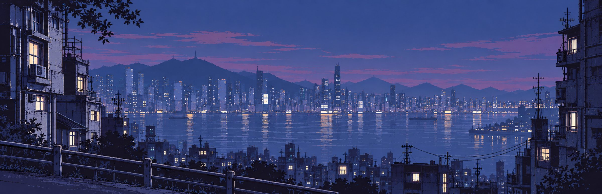
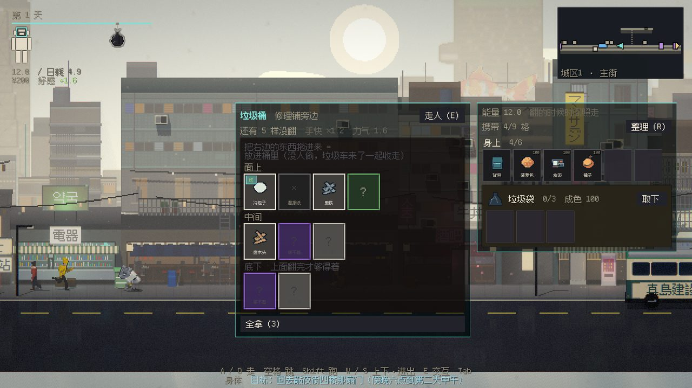
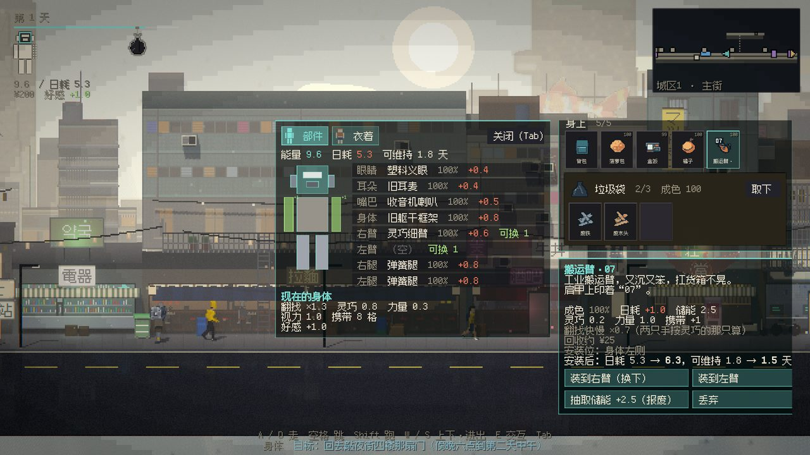
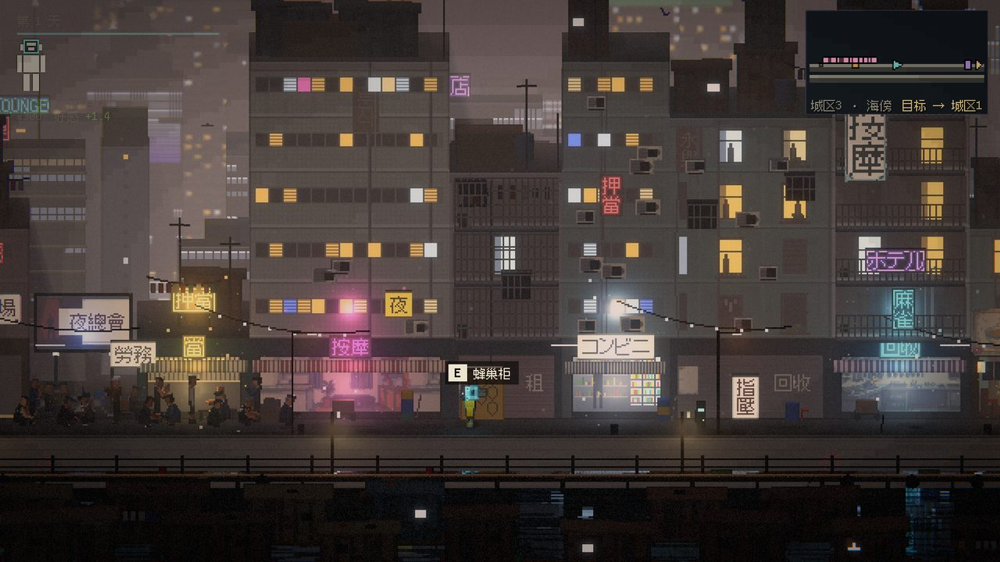
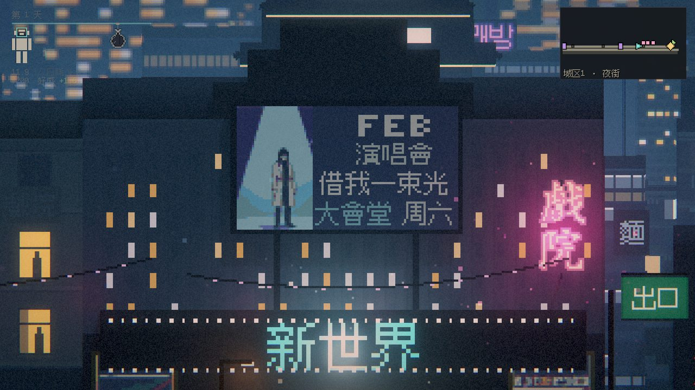
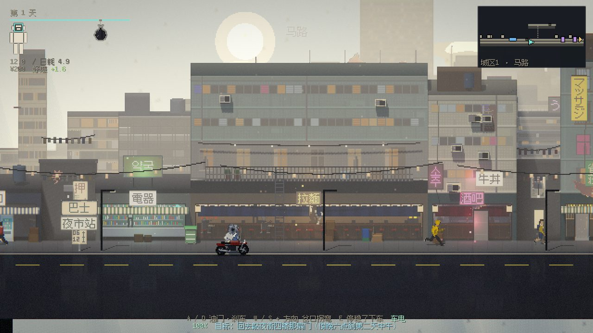
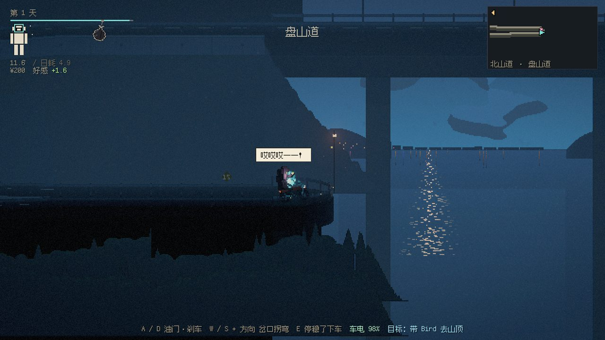
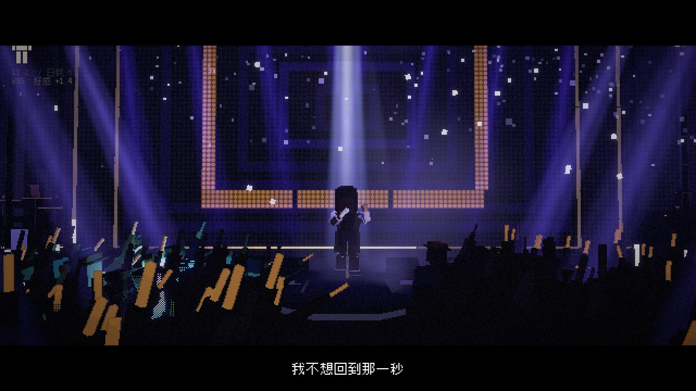
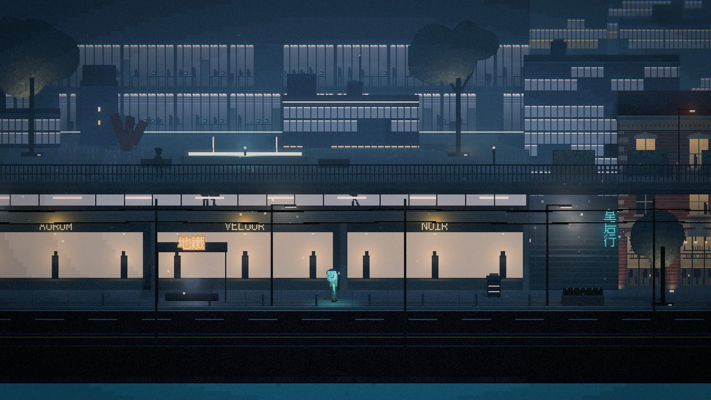

余波
AFTERMATH
ABOUT // 关于
把自己一块块拼回来
一个被拆散的小方块机器人，掉进一座浸在雾气和霓虹里的城市。它只能去翻垃圾桶，把捡来的零件装回自己身上。
它叫 C.T.，没有眼睛，没有耳朵，听不懂人说话。它要把捡来的眼睛、耳朵、手和腿一块块装回去——然后去找那个在电话里喊它的人。
「没时间了，记住，这一切只是个测试！」「我是 Feb！」「来找我！C……」
- 翻垃圾桶：按住一格往下翻，越值钱的翻得越久，松手就白翻了。
- 拼身体：眼睛、耳朵、嘴、手、腿、躯干，各管一样本事。装上什么，才看得清、听得懂、开得了口、搬得动。
- 在城里活下去：吃东西换能量，没电了零件会一件件掉下来。
- 骑上踏板车和摩托，送货，上山。
- 遇见这座城市里的人，还有一只黑猫。
- TYPE
- 2D 像素 · 剧情冒险
- CONTROL
- 电脑：A / D 移动，W / S 上下、进出，E 互动，Tab 身体面板，Shift 跑，M 地图，Esc 菜单；手机：触屏按键
- PLATFORM
- Windows 64 位 · 安卓手机
- VERSION
- 0.2.2 试玩版（第三届 TapTap 聚光灯 GameJam 参赛 Demo）
- PRICE
- 免费
SCREENS // 画面
雾气和霓虹里的城
- SC-01

翻垃圾桶一层一层往下翻。 - SC-02

拼身体捡到什么，装什么。 - SC-03

夜街招牌一盏一盏亮起来。 - SC-04

戏院周六有一场演唱会。 - SC-05

骑车踏板车、摩托，还有公交。 - SC-06

盘山道停下来看一会儿海。 - SC-07

演唱会台下站满了人。 - SC-08

中环住得越高，越有钱。
DOWNLOAD // 下载
免费下载试玩版
WINDOWS · 64-BIT · 100 MB
电脑版
下载后解压，运行文件夹里的 ScrapCore.exe。如果 Windows 提示「已保护你的电脑」，点「更多信息」→「仍要运行」。
下载 Windows 版 ZIP下载慢？也可以在 TapTap 上玩国内网络从 TapTap 下载更快 · 评论区欢迎反馈
去 TapTap TAPTAP